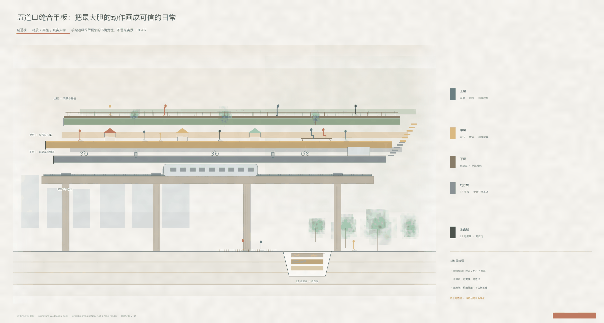

路与票
路是 Openline，票是 Open Ticket。铁路没有票制只是工程。看制度剖面
三章并进：路是 Openline，票是 Open Ticket，魂是以人为轨。权威在 GeoJSON / metrics / 矩阵；本页只做人类可读展板。临时边界不得当作官方红线。

基底→生态→基础设施→功能→活动 · Sasaki v1.1 · provisional 淡约束

路是 Openline，票是 Open Ticket——1909 京张争的是路权自立，2026 续写的是数字时代的市民路权。数据信托上锁、许可链三档签发、一键撤回给删除回执、组件库版本化留痕。治理概念图，非已定制度：机制待与街道 / 数据主管部门共建。
路是 Openline，票是 Open Ticket。铁路没有票制只是工程。看制度剖面
每期同时回答建设 / 出钱 / 运营 / 回流。可逆即低风险。
1909 的「人」写线路形状；这个世纪写价值归属。看显魂

专项债 → 片区统筹 → 企业认养是接力，不是三选一。五道口甲板螺栓连接、不浇筑：示范段错了不是沉没成本。量级估算（A-CAPITAL-001），非概算。分期全表见阅读版与下方重点区五件套。
城市设计竞赛水位：场景氛围先于策划文案。不求施工图深度，但要让人想走进去。

① L1：轨在脚下 · 树冠在顶 · 零公里在远景

② 五道口：电在下 · 人在中 · 景在上 · 待红线深化

③ 大钟寺：西南街面入口 · 东南通学 · 西北古钟导视 · 东北买菜——Adoption 必须可抵达

地点剖面 · 同一条 L1 地面，两边是城。铺装 / 考古沟 / 旧轨成座——评委看见钢轨，不是图标。

同一条地面五种切开：铺装 / 沟 / 座与灯 / 里程思辨碑 / 轨边对话。

从保护遗产到续写京张：1909 火车在山脊转身 → 2026 城市在存量转身 → 这个世纪 AI 以人为轨转身。分级为文献比对框架待勘察校核；口述为空位待真实采集（A-HERITAGE-001）。

地点剖面：既有城 · L1 沟里的钢轨 · 墩 · 三层纸色薄板 · 京张遗址公园。待红线确认后深化——设计勇气，非虚假精确。

镇版之图：从概念工程图深化为带材质、高差与真实人物的剖透视——电在下 · 人在中 · 景在上的空间证明。
总览地图将 Openline、三层范围与用地分区叠读；统筹研究 / 总体设计 / 重点区域递进落实到图层。

43.6 是工作台，三区两翼是引擎；科学城北区与京张北延是接口，不是第二园。清河是河，不是清河站。

公园是纽带。高校、园区、轨道、企业、社区按地理就位；金融街只作西直门以南邻接，不进 43.6。
43.6 km² 产业生态与未来形态。
11.4 km² 控规深度城市设计。已批街区控规（16.68 km²，北至成府路）结构对位：一带一轴、两心多点。
三处详细设计方向性方案。


1:2000 级街廓推敲，不是地块图则。众智园院落主板 · 原点转化街横切 · 大钟寺街墙连续。


地点剖面，不是一点透视符号街。切开看见院落、KM0、甲板、地下站、河。


分期对照，资本闭环导读见上方 #capital。可逆即低风险：专项债 → 片区统筹 → 企业认养接力。量级估算（A-CAPITAL-001），非概算。
众智园（征集重点区必做 / 本份街区控规公开四至未覆盖）/ AI 原点（两心·五道口）/ 大钟寺（两心·大钟寺）：建筑节点包络与更新项目清单见报告 OL-01–OL-09；拆改留仅方法、无地块级结论。

南北 Openline 贯通、东西缝合；蓝绿公共空间沿遗址公园活力带概念叠合。

蓝绿不是形容词，是五个数：碳预算 / 径流控制率 75→85% / 热岛 −0.5→−2.0 °C / 生物多样性净增益 +5→+10% / 树冠 25→35%。传感进数据信托，Verify 闸按季公开；不达标触发组件库整改。目标承诺（A-ECO-001），非实测业绩。
任务覆盖：公告 1.3–1.5 与 agent.1–agent.6 见 compliance / standard / design_depth 矩阵。自检状态：provisional 边界仅 intake；正式红线到位后整包复算。本页指标与 metrics.json 对齐。


角色类型图谱，不点名具体机构/企业/金额。中心接口：全栈研发｜开放提问｜城市采纳 + 两翼。四条流：问题 / 采纳 / 资源 / 公共。
共享底板保持稳定，五类研发单元持续升级；全栈协作街连接上下游，全球治理中心把标准、安全与责任嵌入研发。不重做京张之环。
授权窗口 + 八找并置 + 开源发布 + 社区微场景；失败案例库是卡 01 的继承接口，不是 104 ha 的全部。不声称高校/业主已同意。官方约 3 km² 不以 104 ha 替代。
核验过的能力必须能上街：试用/买/订/拒绝。站一体化与四象限只做到达。不仿钟，不把商场中庭起名当地标。
权→配→证→用→遗 · 跳过任一步只是近校园区
街面法则 ‖ 下街例外 ‖ 生活剩余 · 8 分钟只检验能否被路过
不变层 / 可变层 / 许可层 · 15 分钟只检验换代后是否仍可读
原点 · 卡 01 开源/首发的独立运营形态
治理中心 + 具身智能单元受控场地 · 公众说明界面可见
Openline 节点 · 测试验证
Openline 主脊 · 可关闭
大钟寺 · 清权内容
共享绿色底板 · 人工巡检
原点 · 人工法务窗
Adoption · 测试验证
小月河翼驿站 · 听懂/想到/办妥 · 不占三区深度卡
一带公共系统

来源：sources.json · 假设：assumptions.json · constraints.geojson 空集合优于编造控制线。
本页离线静态；不加载 CDN、远程瓦片、外部字体、iframe 或 API。